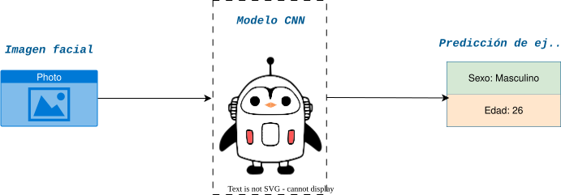
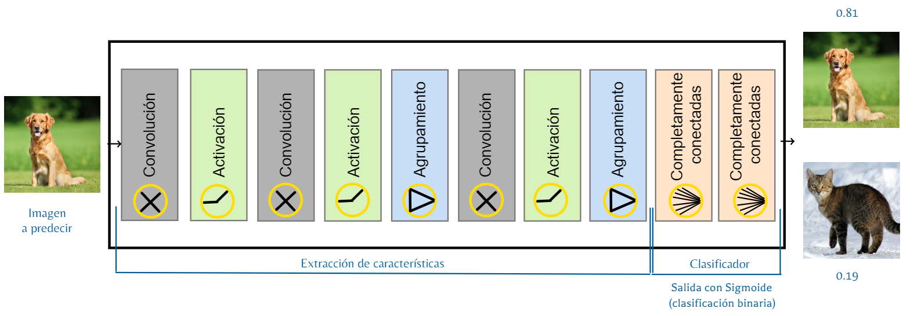
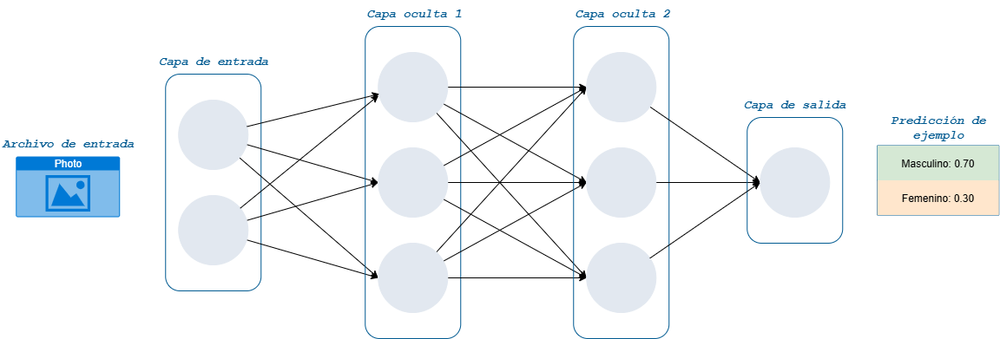
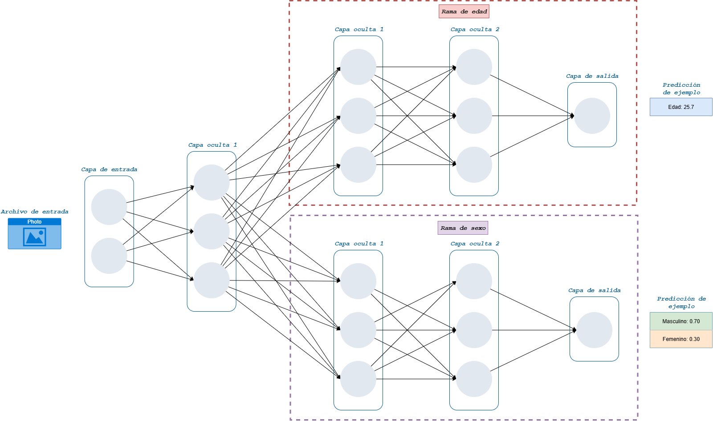

Entrenando una red CNN desde cero
¿Qué haremos hoy?
En este post, te mostraré uno de los flujos a seguir para entrenar un modelo CNN desde cero donde construiremos una red neuronal convolucional que sea capaz de estimar la edad y sexo de una persona a partir de su imagen facial.

Como fuente de datos utilizaremos un subconjunto de datos de imágenes de rostros extraídos del dataset de Kaggle UTKFace, sin embargo, el enfoque es aplicable a cualquier conjunto de datos de imágenes.
Para la creación de esta red neuronal convolucional utilizaremos la API de Keras versión 3, ahora integrado a Tensorflow a partir de la versión 2.0.
Un poco de información...
En esta sección te compartiré algunos conceptos básicos que te ayudarán a entender mejor el desarrollo del modelo.
Red neuronal artificial (ANN)
Una red neuronal artificial es un modelo de inteligencia artificial inspirado en cómo funciona el cerebro humano. Aprende de datos para reconocer patrones y tomar decisiones: desde clasificar imágenes hasta predecir tendencias.
Dependiendo del problema, existen diferentes arquitecturas (topologías). Aquí están las más usadas y una explicación simple de cuándo aplicarlas.
Red neuronal directa (FeedForward)
Las redes directas procesan los datos en un solo sentido: entrada → capas ocultas → salida. No mantienen memoria del pasado, por lo que son ideales para tareas de clasificación y regresión con datos tabulares.
Ejemplo: Predecir el precio de una casa usando características (m², habitaciones, ubicación).
Red neuronal recurrente (RNN)
Las RNNs procesa los datos de manera iterativa a través de la misma red, es decir, luego de procesar los datos y obtener la predicción en la capa de salida, esta predicción se envía a la capa de entrada para que la nueva predicción no sea solo influenciada por los nuevos datos, sino también además por el estado anterior de la última predicción.
Ejemplo: Previsión de series temporales (ventas diarias) donde el pasado reciente influye en la predicción futura.
Red neuronal convolucional (CNN)
Las CNNs están diseñadas para procesar datos con estructura espacial, sobre todo imágenes. Usan filtros (convoluciones) que detectan patrones locales como bordes, texturas y formas, combinando estos datos en capas profundas para reconocer objetos.
Ejemplo: Clasificar imágenes (perro vs. gato) o detectar objetos en una fotografía.
En esta publicación nos enfocaremos en entender y aplicar la red neuronal convolucional a través de un ejemplo práctico que incluye el código basado en Python.
Existen arquitecturas más avanzadas como las Redes Generativas Adversariales (GANs) y los Transformers, ampliamente usados en generación de imágenes y en modelos de lenguaje como ChatGPT. No las veremos a detalle aquí, pero si quieres profundizar te recomiendo este artículo de Microsoft.
Desentrañando las CNN
Las redes neuronales convolucionales (CNN) son una clase especial de redes neuronales diseñadas para procesar datos con una estructura de cuadrícula, como imágenes. A diferencia de las redes neuronales tradicionales, que son completamente conectadas, las CNN utilizan capas de convolución para extraer características jerárquicas de los datos de entrada.
Las CNN se componen de varios tipos de capas conectados secuencialmente:
- Capas de convolución: Aplican filtros a la entrada para crear mapas de características.
- Capas de activación: Introducen no linealidades en el modelo (ReLU es la más común).
- Capas de agrupamiento: Reducen la dimensionalidad de los mapas de características.
- Capas completamente conectadas: Realizan la clasificación final basándose en las características extraídas.
Capas de convolución
Estas capas aplican filtros o también llamado kernels que se deslizan sobre la imagen de entrada para detectar patrones locales como bordes, texturas y formas.
Para comprender plenamente como funcionan estos filtros debemos mencionar a los hiperparametros kernel size, padding y stride.
Además, dado que el filtro se define como una matríz, podemos imaginarnos al filtro como una grilla (un tablero de ajedrez pequeño), donde el ancho y alto tienen el mismo tamaño. Aquí entra el primer hiperparámetro: el kernel size, el cual define el tamaño del filtro.
Por otro lado, como el filtro se desplaza recorriendo la imagen paso a paso, el padding hace referencia a la adición de píxeles en los bordes de la imagen. Esto permite que el filtro también pueda analizar las zonas cercanas al borde y que el tamaño de la imagen procesada no se reduzca.
Finalmente, el stride indica de cuánto en cuánto se mueve el filtro al recorrer la imagen. Si el paso es pequeño, el filtro analiza con más detalle pero genera un resultado más grande; si el paso es mayor, avanza más rápido, resumiendo la información pero con menos precisión. En otras palabras, el stride controla el “ritmo” con el que la red examina la imagen.
Todo esto puede sonar quizás un tanto abstracto, por ello, veámoslo con unos ejemplos prácticos.
En este primer ejemplo podemos ver como trabajaría la capa de convolución con los siguientes hiperparametros:
- kernel size: 3x3, es decir, una grilla de 3 unidades de ancho por 3 de alto.
- padding: same, lo que significa que no se agregaron píxeles extra alrededor de la imagen original.
- stride: 1, lo que indica que el filtro avanza de un píxel en un píxel al recorrer la imagen.
Bien... ¿y qué pasa si probamos con un kernel size más pequeño?
- kernel size: 2x2, es decir, una grilla de 2 unidades de ancho por 2 de alto.
- padding: same, lo que significa que no se agregaron píxeles extra alrededor de la imagen original.
- stride: 1, lo que indica que el filtro avanza de un píxel en un píxel al recorrer la imagen.
En este caso, el kernel size se ha reducido a 2x2, lo que permite capturar características más finas en la imagen. Sin embargo, esto también significa que la capa de convolución tendrá menos información contextual para trabajar, lo que podría afectar la calidad de las características extraídas.
Si no está del todo claro hasta ahora, aquí te comparto una analogía rápida: imagina que estás viendo una foto tipo selfie de tu abuela, con un kernel size más grande (de 3x3 o más grande) podrías enfocarte visualizar la frente y los ojos a la vez (y luego otras partes de la foto como la nariz y la boca); mientras que con un kernel size más pequeño (de 2x2) podrías enfocarte en visualizar en algo más concreto como solo el ojo izquierdo del selfie.
¿Notaste la diferencia? Con un kernel size más pequeño es posible ver los detalles de un sector más específico dentro de la imagen, como notar incluso poros o las arrugas alrededor del ojo. Sin embargo, al reducir el tamaño del kernel se pierde información contextual, como notar si el color de ambos ojos son iguales, con un kernel más grande podrías notar esto directamente en una observación.
Ahora que entendemos la importancia del kernel size, veamos qué ocurre al modificar los valores de padding y stride, y cómo estos hiperparámetros influyen en el funcionamiento de la capa de convolución.
- kernel size: 3x3, es decir, una grilla de 3 unidades de ancho por 3 de alto.
- padding: 1, lo que significa que se agrega 1 píxel extra alrededor de la imagen original.
- stride: 2, lo que indica que el filtro avanza de 2 píxeles en 2 píxeles al recorrer la imagen.
En este caso, un padding de 1 píxel permite que el filtro también analice las zonas cercanas a los bordes de la imagen. Por otro lado, un stride de 2 píxeles hace que el filtro avance más rápido al recorrerla, resumiendo la información obtenida pero sacrificando algo de precisión en los detalles.
¿Entonces cuál es la mejor configuración de estos hiperparámetros? 😲
La respuesta es que depende del problema que estés tratando de resolver y de la naturaleza de los datos con los que estás trabajando. Experimentar con diferentes configuraciones y evaluar su impacto en el rendimiento del modelo es clave para encontrar la mejor solución.
Puedes explorar con herramientas de exploración de hiperparametros para encontrar el mejor valor para cada uno de tus hiperparámetros, hoy existen muchas alternativas, pero mi favorita es Optuna por su flexibilidad y facilidad de uso. Se integra con múltiples frameworks/librerías tanto de Machine Learning como de Deep Learning, además de su integración con soluciones de logging y tracking como MLFlow y Weights & Biases.
Hasta ahora sabemos como estos hiperparametros afectan la forma en la que la imagen es analizada, pero ¿Qué obtenemos como resultado? 😲
El resultado de aplicar una capa de convolución es un conjunto de mapas de características (feature maps), que son representaciones simplificadas de la imagen original, destacando las características más relevantes detectadas por los filtros.
Sí, leíste bien, mapas de características, en plural. Esto se debe a que en una capa de convolución se aplican múltiples filtros (obteniendo un mapa de características por cada filtro), cada uno diseñado para detectar diferentes patrones en la imagen. Por ejemplo, un filtro puede estar enfocado en detectar bordes horizontales, otro en bordes verticales, y así sucesivamente.
Cada uno de estos filtros genera su propio mapa de características, pero ¿Cómo la red sabe qué patrones buscar y cuantos filtros usar? 😲
Bueno, la búsqueda de patrones se realiza mediante el entrenamiento de la red neuronal y sigue el proceso ya conocido como backpropagation a fin de encontrar los pesos de cada mapa de características, no voy a entrar en detalle de esto porque es un capitulo completo explicar su flujo matemático, pero en un próximo video y publicación lo abordaré a detalle; mientras tanto te puedo recomendar este recurso que me ayudó a entender mejor este proceso.
Por otro lado, la cantidad de filtros a usar en cada capa de convolución es otro hiperparámetro que debe ser definido por nosotros al momento de crear la arquitectura de la red neuronal. Sí, otro hiperparámetro a definir, pero nada que el amigo Optuna no pueda ayudarnos a optimizar.
Capas de activación
Estas capas aplican funciones de activación a los mapas de características generados por las capas de convolución. Su objetivo es introducir no linealidades en el modelo, permitiendo que la red aprenda patrones más complejos.
La función de activación más comúnmente utilizada en las capas de activación es ReLU (Rectified Linear Unit), que convierte todos los valores negativos a cero, manteniendo los positivos sin cambios. Esto ayuda a acelerar el proceso de entrenamiento y a mitigar el problema del desvanecimiento del gradiente durante el backpropagation.
¿Valores positivos y negativos? ¿De dónde sale eso y qué significa? 😲
Debemos recordar que los pixeles de cada imagen se traducen en valores numéricos que representan la intensidad de la luz en diferentes canales de color (por ejemplo, rojo, verde y azul). Estos valores pueden ser positivos o negativos dependiendo de cómo se procesen a través de las capas de la red neuronal. Para entender esto, veamos cómo se visualiza un mapa de características obtenido por la capa de convolución y su equivalente rectificado mediante la función de activación ReLU.
A continuación, vemos un ejemplo de un mapa de características representado como una matriz de 5x5 obtenida después de una convolución. Luego, aplicamos la función de activación ReLU, que revisa cada valor de la matriz.
En este ejemplo, la función de activación ReLU (Rectified Linear Unit) toma el mapa de
características y convierte todos los valores negativos en 0. Esto ayuda a que la red se
enfoque solo en la información más importante, mostrando una representación más clara de lo que la imagen
contiene.
¿ReLU es la única función de activación? 😲
¡No! Existen otras funciones de activación como Sigmoid, Tanh y variantes
de ReLU como SeLU o GeLU, pero ReLU es la más popular en las CNN debido a
su simplicidad y eficacia (brinda buenos resultados solo al convertir valores negativos en 0).
Sin embargo, la elección de la función de activación puede depender del problema específico que se esté
abordando. Puedes explorar más sobre estas funciones en este articulo de Google
Developers.
En resumen, las capas de activación son cruciales en las CNN porque permiten que la red aprenda patrones complejos y no lineales en los datos, mejorando significativamente su capacidad para reconocer y clasificar imágenes, y además siempre van después de una capa de convolución.
Capas de agrupamiento
Estas capas sirven para reducir el tamaño de los mapas de características (rectificados), resumiendo la información más importante. De esta forma, la red necesita menos parámetros y cálculos, es decir, menos cómputo requerido para ejecutar el modelo (hacer predicciones en un entorno real). Por otro lado, estas capas también ayudan a evitar el overfitting o sobreajuste, si estos términos no son familiares para ti, checa este blog.
Overfitting se refiere a la creación de un modelo que coincida (memorice) con el conjunto de entrenamiento de tal manera que no pueda realizar predicciones correctas con datos nuevos. Un modelo sobreajustado es análogo a un invento que funciona bien en el laboratorio, pero que no tiene valor en el mundo real (Fuente: Google Developers)
¿Entonces el overfitting es negociable? 😲
¡No, en todo modelo de Machine Learning o Deep Learning se tiene que evitar!
Los mapas de caracteristicas son representaciones simplificadas de la imagen original altamente sensibles, esta sensibilidad se puede traducir en que si intentas predecir una imagen facial donde la nariz ocupa tres pixeles más que la imagen con la que entrenaste el modelo, la predicción puede fallar. ¡Pero son 3 pixeles! ajá, por ello, es importante reducir esta sensibilidad y hacer que el modelo sea más robusto, y las capas de agrupamiento ayudan a lograr esto.
Dicho esto, debo mencionarte que las capas de agrupamiento también requieren hiperparametros (similar a la capas de convolución). Además, existen diferentes tipos de capas de agrupamiento, pero las más comunes son Max Pooling y Average Pooling, entendamos su diferencia con un par de ejemplos.
Los hiperparámetros kernel size y stride se definen de la misma forma que en la capa de convolución, por lo que podemos aprovechar de ese conocimiento directamente.
En este primer ejemplo podemos ver como trabajaría la capa de agrupamiento con los siguientes hiperparametros:
- kernel size: 3x3, es decir, una grilla de 3 unidades de ancho por 3 de alto.
- stride: 1, lo que indica que el filtro avanza de 1 píxel en 1 píxel al recorrer la imagen.
- tipo de pooling: max pooling, que selecciona el valor máximo dentro de la región cubierta por el filtro.
Ahora veamos qué ocurre si cambiamos el tipo de pooling a average pooling, manteniendo los mismos hiperparámetros que en el ejemplo anterior:
- kernel size: 3x3, es decir, una grilla de 3 unidades de ancho por 3 de alto.
- stride: 1, lo que indica que el filtro avanza de 1 píxel en 1 píxel al recorrer la imagen.
- tipo de pooling: average pooling, que calcula el valor promedio dentro de la región cubierta por el filtro.
En resumen, las capas de agrupamiento (pooling) son esenciales en las CNN porque reducen el tamaño de los mapas de características, simplifican la información más relevante y ayudan a que el modelo sea más eficiente y robusto, evitando la sensibilidad excesiva a pequeños cambios en la imagen.
Capas completamente conectadas
Estas capas sirven para tomar todas las características extraídas por las capas anteriores y combinarlas para decidir la clase final de la imagen (por ejemplo: perro o gato).
Pero... ¿Cómo funciona? 😲
Recordemos que las capas de convolución y de agrupamiento ya se encargaron de extraer y resumir características de la imagen: bordes, texturas, colores, formas, y cualquier otra característica visual.
Entonces, imagina que tienes una lista de características detectadas, como “pistas” que describen la imagen (valores numéricos como los que aparecen en la animación inferior).
Cada característica (\(x_i\)) se conecta con todas las clases posibles mediante un peso (\(w_i\)):
- Si la característica es relevante para una clase, el peso será alto (positivo).
- Si la característica no es relevante, el peso será bajo (cercano a cero o negativo).
De esta forma, cada característica (pista) emite un “voto” con distinta importancia (peso) para cada categoría.
Finalmente, la capa completamente conectada suma todos estos votos ponderados para cada clase y aplica una función de activación (como sigmoide o softmax) para convertir estas sumas en probabilidades. La clase con la probabilidad más alta es la predicción final del modelo.
Matemáticamente (pero simple):
$$ p(X) = \sigma \Big(\sum_i x_i w_i + b\Big), \quad \text{donde } \sigma(z) = \frac{1}{1+e^{-z}} $$El cálculo se hace como una suma ponderada de todas las características. Cada característica \(x_i\) se multiplica por su peso \(w_i\), se suman todas junto con un sesgo \(b\), y finalmente se aplica la función sigmoide para convertir el resultado en una probabilidad.
Donde:
- \(p(X)\) es la probabilidad de que la imagen pertenezca a una clase específica (por ejemplo, gato).
- \(x_i\) son las características extraídas por las capas anteriores.
- \(w_i\) son los pesos que indican la importancia de cada característica para la clase.
- \(b\) es un sesgo que ayuda a ajustar la salida.
- \(\sigma(z)\) es la función sigmoide que convierte el resultado en una probabilidad entre 0 y 1 (para más de 2 clases se utiliza la función softmax).
En este ejemplo se muestra cómo una capa completamente conectada toma las características extraídas por las capas anteriores, las aplana y las conecta a todas las posibles clases (en este caso, 2 clases: gato y perro).
Las conexiones más fuertes (líneas más remarcadas) indican que esas características son más relevantes para esa clase en particular.
En este ejemplo hemos aplicado la función de activación sigmoide, que es adecuada para problemas de clasificación binaria (dos clases). Si estuviéramos trabajando con múltiples clases (por ejemplo, gato, perro, pájaro), utilizaríamos la función softmax en su lugar.
Como se puede observar, la clase con la probabilidad 0.81 más alta (en este caso, perro) es la predicción final del modelo.
En las capas anteriores hemos hablado de varios hiperparámetros, y las capas completamente conectadas no son la excepción, aquí los más importantes:
- Número de neuronas: Define cuántas unidades (neuronas) tendrá la capa. Más neuronas pueden capturar patrones más complejos, pero también aumentan el riesgo de sobreajuste.
- Función de activación: La elección de la función de activación (ReLU, lineal, sigmoide, softmax, etc.) afecta cómo se procesan las señales dentro de la capa y puede influir en el rendimiento del modelo.
- Regularización: Técnicas como Dropout o L2 regularization ayudan a prevenir el sobreajuste al agregar ruido o penalizar pesos grandes durante el entrenamiento. Puedes leer más sobre esto en este recurso de Google Developers.
- Dropout: Esta técnica consiste en "apagar" aleatoriamente un porcentaje de neuronas durante el entrenamiento, lo que ayuda a prevenir el sobreajuste. Puedes entender más sobre Dropout en este recurso de Ultralytics.
Y ya como anteriormente vimos, estos hiperparámetros pueden ser optimizados usando herramientas como Optuna.
En resumen, las capas completamente conectadas son cruciales en las CNN porque combinan todas las características extraídas para tomar una decisión final sobre la clase de la imagen, permitiendo que el modelo realice predicciones precisas basadas en la información visual procesada.
Visión global de la CNN
Hasta ahora hemos visto las capas principales que componen una CNN, pero ¿Cómo se integran todas estas capas para formar una red completa? Veamos un diagrama general de la arquitectura típica de una CNN.

Como muestra la imagen anterior, el flujo de datos comienza con la imagen de entrada, que pasa por varias capas de convolución y activación para extraer características, seguido de capas de agrupamiento para reducir la dimensionalidad. Finalmente, las características extraídas se aplanan y se pasan a través de capas completamente conectadas para realizar la clasificación final.
Pero, ¿Todas las redes CNN deben seguir el esquema especifico mostrado? 😲
¡No, no hay una única receta fija!
La arquitectura específica puede variar dependiendo del problema que se esté abordando, la naturaleza de los datos y los objetivos del modelo. Algunas CNN pueden incluir capas adicionales como capas de normalización (Batch Normalization), capas de abandono (Dropout) para prevenir el sobreajuste, o incluso estructuras más complejas como bloques residuales (ResNet) o módulos Inception.
La clave está en experimentar con diferentes arquitecturas y evaluar su rendimiento en el conjunto de datos específico para encontrar la configuración que funcione mejor para el problema en cuestión.
¿Y adivina qué? Optuna puede ayudarte con esto también, simplemente tratando cada una de las capas como un hiperparámetro más a optimizar, en la sección del hands-on te mostraré un breve ejemplo de ello.
En resumen, una CNN transforma una imagen en una decisión, pasando de píxeles a características y de características a predicciones. Para entender mejor cómo se construyen y entrenan estas redes, en la siguiente sección veremos un ejemplo práctico con Keras.
Keras, la herramienta
Antes de comenzar con la parte práctica, hagamos una breve parada para entender qué es Keras, una de las bibliotecas más usadas para crear modelos de aprendizaje profundo.. Antes de continuar, considero importante mencionar que Keras v3 ofrece 3 formas de crear modelos, puedes consultar el detalle completo en el sitio web de Keras. Sin embargo, a manera de resumen te comento brevemente la diferencia entre estas:
- API secuencial: Forma simple de apilar capas, soporta una sola entrada y
salida.
Ejemplo: Predecir el género (1 salida) de una persona a partir de su imagen facial (1 entrada).

- API funcional: Permite arquitecturas más personalizables con múltiples
entradas y salidas.
Ejemplo: Predecir el género y la edad (2 salidas) de una persona a partir de su imagen facial (1 entrada).

- Sub-clase de modelo: Permite crear arquitecturas dinámicas que se adaptan
a requisitos
donde se necesita un mayor control sobre el flujo de datos y la lógica de la red dependiendo del tipo de
entrada.
Ejemplo: Agregar capas de convolución y agrupamiento (pooling) condicionalmente, dependiendo del tamaño de la imagen de entrada. Si la imagen es grande, agregar más capas para extraer más características; si es pequeña, usar menos capas para evitar la sobrecarga computacional. Puedes entenderlo como lógicas de flujo condicionales dentro de la arquitectura de la red que potencia las capacidades de las 2 arquitecturas previas. Este enfoque se usa frecuentemente en arquitecturas de investigación o cuando se busca un control total sobre el flujo interno del modelo.
Como en este ejemplo vamos a crear una arquitectura que generará dos predicciones de salida (edad y sexo), haremos uso de la API funcional de Keras. Puedes seguir el notebook disponible en Google Colab.
¡Hora de practicar!
Ahora que comprendemos las tres formas de construir modelos con Keras, es momento de poner manos a la obra. En esta sección implementaremos paso a paso una red neuronal convolucional utilizando la API funcional, una basada en la que empleamos en el esquema de predicción de género y edad.
El objetivo será reproducir el flujo completo: desde la carga de datos hasta la generación de predicciones.
Importación de librerías requeridas
Lo primero es importar las librerías requeridas para este ejercicio. Utilizaremos Keras dentro del ecosistema de TensorFlow, ya que es la forma recomendada actualmente. Además,
utilizaremos NumPy, Matplotlib y OpenCV para la
manipulación y visualización de imágenes.
Además, dado que estamos en Google Colab, también importamos drive
de Google Colab y os para montar Google Drive y acceder a los
archivos.
# Librerias de sistema
import os
import random
# Librerias para procesamiento
import numpy as np
import tensorflow as tf
from tensorflow import keras
from tensorflow.keras import layers
from tensorflow.keras.regularizers import l2
from tensorflow.keras.utils import plot_model
# Librerias para visualización
import cv2
import matplotlib.pyplot as plt
# Libreria para montar Google Drive (solo en Google Colab)
from google.colab import driveCon estas dependencias listas, ya tenemos todo lo necesario para definir el entorno de trabajo.
Definición de variables
A continuación, definimos algunas variables que utilizaremos a lo largo del notebook. Estas incluyen la ruta de montaje de Google Drive, la cantidad de imágenes a mostrar, la ruta del conjunto de datos, la ruta para guardar los modelos entrenados, el tamaño del lote, el tamaño de las imágenes, el número de épocas, los canales y el porcentaje de datos a utilizar para entrenamiento.
MOUNT_POINT = "/content/drive" # Punto de montaje de Google Drive
DATASET_PATH = "/content/drive/MyDrive/train_val" # Ruta para acceder al conjunto de datos
FOLDER_MODELS = "/content/drive/MyDrive/models" # Ruta para guardar los modelos entrenados
IMAGES_TO_DISPLAY = 20 # Número de imágenes a mostrar en la visualización
BATCH_SIZE = 32 # Tamaño del lote para el entrenamiento
IMAGE_SIZE = 128 # Tamaño al que se redimensionarán las imágenes
EPOCHS = 10 # Número de épocas para el entrenamiento
NUM_CHANNELS = 3 # Número de canales de las imágenes
TRAINING_PERCENTAGE = 0.8 # Porcentaje de datos a utilizar para entrenamientoEstas variables nos ayudarán a mantener el código organizado y facilitarán cualquier ajuste que necesitemos hacer en el futuro.
Montar Google Drive
Dado que los datos están almacenados en Google Drive, el siguiente paso es montar Google Drive en el entorno de Colab para poder acceder a los archivos.
drive.mount(MOUNT_POINT)Al ejecutar esto el navegador nos pedirá autorización para acceder a Google Drive, simplemente seguimos las instrucciones en pantalla.
Visualización de una muestra de imágenes
Este paso es opcional pero recomendable para entender mejor el conjunto de datos con el que trabajaremos.
Cargar imágenes a tensorflow dataframe
Ahora que tenemos acceso a los datos, el siguiente paso es cargar una muestra de imágenes del conjunto de datos para visualizarlas y entender mejor qué tipo de imágenes estamos manejando.
file_names = os.listdir(DATASET_PATH) # Listamos todos los archivos en el directorio del conjunto de datos
random_images = random.sample(file_names, IMAGES_TO_DISPLAY) # Seleccionamos aleatoriamente 20 imágenes
images, age_labels, gender_labels = [], [], [] # Creamos listas para imágenes y etiquetas
for image in random_images: # Se itera sobre las imágenes seleccionadas
labels = image.split('_') # Extraemos etiquetas de edad y género del nombre del archivo delimitados por '_'
image = cv2.imread(os.path.join(DATASET_PATH, image)) # Leemos la imagen usando OpenCV
image = cv2.cvtColor(image, cv2.COLOR_BGR2RGB) # Convertimos de BGR a RGB
age_label = int(labels[0]) # La edad es la primera parte del nombre del archivo
gender_label = int(labels[1]) # El género es la segunda parte del nombre del archivo
age_labels.append(age_label) # Agregamos la etiqueta de edad a la lista
gender_labels.append(gender_label) # Agregamos la etiqueta de género a la lista
images.append(image) # Agregamos la imagen a la lista
# Convertimos las listas a arreglos de NumPy para cargarlos en tensorflow dataset
images_sample = np.array(images, dtype=np.int32)
age_sample = np.array(age_labels, dtype=np.int32)
gender_sample = np.array(gender_labels, dtype=np.int32)
# Creamos un objeto de dataset de tensorflow en base a las muestras
sample_ds = tf.data.Dataset.from_tensor_slices((images_sample, age_sample, gender_sample))
sample_ds = sample_ds.shuffle(len(images_sample)).batch(BATCH_SIZE).prefetch(tf.data.AUTOTUNE)
Aquí, seleccionamos aleatoriamente un conjunto de imágenes del directorio del conjunto de datos, las
leemos y convertimos a formato RGB (ya que OpenCV las lee en formato BGR por defecto). Además, extraemos
las etiquetas de edad y género de los nombres de los archivos, ya que sabemos que el formato del nombre es
edad_genero_raza_id-unico.jpg.
Por ejemplo, un archivo llamado 25_0_3_123432323235.jpg indica que
la
persona en la imagen tiene 25 años y es de género femenino (1). De igual forma, un archivo llamado
30_1_4_23231267890.jpg indica que la persona tiene 30 años y es de
género
masculino (0).
Finalmente, convertimos las listas de imágenes y etiquetas en arreglos de NumPy y creamos un
tf.data.Dataset para facilitar la manipulación y el procesamiento
de los datos.
Previsualización de imágenes cargadas
Finalmente, visualizamos las imágenes cargadas junto con sus etiquetas de edad y género para asegurarnos de que se han cargado correctamente.
plt.figure(figsize=(15, 12)) # Configuramos el tamaño de la figura
for image, age, gender in sample_ds.take(1): # Tomamos un lote del dataset
for i in range(IMAGES_TO_DISPLAY): # Iteramos sobre las imágenes del lote
ax = plt.subplot(4, 5, i + 1) # Creamos un subplot para cada imagen
plt.imshow(np.array(image[i]).astype("uint8")) # Mostramos la imagen
plt.title(f"Age: {int(age[i])} // Gender: {int(gender[i])}") # Imprimimos el título con edad y género
plt.axis("off")Como podemos observar, las imágenes se han cargado correctamente, y las etiquetas de edad y género coinciden con las imágenes mostradas. Esto confirma que estamos listos para proceder con el preprocesamiento y entrenamiento del modelo.

Particionar el conjunto de datos
Ahora que hemos visualizado una muestra de las imágenes, el siguiente paso es dividir el conjunto de datos en conjuntos de entrenamiento y validación. Esto es crucial para evaluar el rendimiento del modelo durante el entrenamiento y asegurarnos de no caer en overfitting.
all_image_files = [file for file in os.listdir(DATASET_PATH) if file.lower().endswith(('.jpg'))] # Listamos todos los archivos de imagen en el directorio del conjunto de datos
random.seed(0) # Fijamos una semilla para reproducibilidad del shuffle
random.shuffle(all_image_files) # Mezclamos aleatoriamente los archivos de imagen
total_images = len(all_image_files) # Contamos el número total de imágenes
train_end = int(total_images * TRAINING_PERCENTAGE) # Calculamos el índice para dividir el conjunto de datos
# Separamos los archivos en conjuntos de entrenamiento y validación
train_image_files = all_image_files[:train_end] # Archivos de imagen para entrenamiento
val_image_files = all_image_files[train_end:] # Archivos de imagen para validación Aquí, listamos todos los archivos de imagen en el directorio del conjunto de datos y los mezclamos aleatoriamente para asegurar que la división sea representativa. Luego, calculamos el índice para dividir el conjunto de datos según el porcentaje definido para entrenamiento (80% en este caso) y separamos los archivos en conjuntos de entrenamiento y validación.
Segmentación de datos
A continuación, definimos una función para cargar las imágenes y sus etiquetas (edad y género) desde los nombres de archivo. Esta función leerá cada imagen, la convertirá a formato RGB, la normalizará y extraerá las etiquetas de edad y género del nombre del archivo.
Leer y procesar imagenes y etiquetas
La función load_images_labels toma como entrada la ruta del
conjunto de datos y una lista de nombres de archivo. Devuelve tres arreglos de NumPy: uno con las imágenes
procesadas, otro con las etiquetas de edad y otro con las etiquetas de género.
# Definimos una función para cargar imágenes y sus etiquetas (edad y género) desde los nombres de archivo
def load_images_labels(dataset_path, filenames):
images, age_labels, gender_labels = [], [], [] # Creamos listas para imágenes y etiquetas
for current_file_name in filenames: # Se itera sobre los nombres de archivo proporcionados
image = cv2.imread(os.path.join(dataset_path, current_file_name)) # Leemos la imagen usando OpenCV
image = cv2.cvtColor(image, cv2.COLOR_BGR2RGB) # Convertimos de BGR a RGB
image = image / 255.0 # Normalizamos la imagen a [0, 1] como práctica recomendada
labels = current_file_name.split('_') # Extraemos las etiquetas de edad y género del nombre del archivo
age_label = int(labels[0]) # La edad es la primera parte del nombre del archivo
gender_label = int(labels[1]) # El género es la segunda parte del nombre del archivo
age_labels.append(age_label) # Agregamos la etiqueta de edad a la lista
gender_labels.append(gender_label) # Agregamos la etiqueta de género a la lista
images.append(image) # Agregamos la imagen a la lista
# Convertimos las listas a arreglos de NumPy para cargarlos en tensorflow dataset
images = np.array(images)
age_labels = np.array(age_labels)
gender_labels = np.array(gender_labels)
return images, age_labels, gender_labelsCargar datos a memoria
Ahora, utilizamos la función definida anteriormente para cargar las imágenes y sus etiquetas tanto para el conjunto de entrenamiento como para el conjunto de validación.
# Llamamos a la función para cargar imágenes y etiquetas de entrenamiento en memoria
train_images, train_age, train_gender = load_images_labels(DATASET_PATH, train_image_files)
# Llamamos a la función para cargar imágenes y etiquetas de validación en memoria
val_images, val_age, val_gender = load_images_labels(DATASET_PATH, val_image_files)Crear objetos de TensorFlow dataset
Finalmente, convertimos los arreglos de imágenes y etiquetas en objetos tf.data.Dataset para facilitar su manipulación durante el entrenamiento
del modelo. Estos objetos permiten un manejo eficiente de los datos, incluyendo operaciones como el
barajado (shuffling), el agrupamiento en lotes (batching) y la pre-carga (prefetching) para optimizar el
rendimiento durante el entrenamiento.
# Creamos un objeto de dataset de tensorflow en base a las imágenes y etiquetas de entrenamiento
train_ds = tf.data.Dataset.from_tensor_slices(({"my_images_input": train_images}, {"age_output":train_age, "gender_output":train_gender}))
train_ds = train_ds.shuffle(len(train_images)).batch(BATCH_SIZE).prefetch(tf.data.AUTOTUNE)
# Creamos un objeto de dataset de tensorflow en base a las imágenes y etiquetas de validación
val_ds = tf.data.Dataset.from_tensor_slices(({"my_images_input": val_images}, {"age_output":val_age, "gender_output":val_gender}))
val_ds = val_ds.shuffle(len(val_images)).batch(BATCH_SIZE).prefetch(tf.data.AUTOTUNE)Aumentación de datos
Aunque no se mencionó este concepto durante la teoría abordada, la aumentación de datos es una técnica crucial en el entrenamiento de modelos de aprendizaje profundo, especialmente cuando se trabaja con conjuntos de datos limitados.
Consiste en aplicar transformaciones aleatorias a las imágenes de entrenamiento para crear variaciones adicionales, lo que ayuda a mejorar la generalización del modelo (capacidad de predecir correctamente en datos no vistos), evitando el overfitting.
# Definimos una función para aplicar aumentos de datos a las imágenes
def data_augmentation(images):
for layer in data_augmentation_layers:
images = layer(images)
return images
# Definimos las técnicas de aumento de datos que aplicaremos
data_augmentation_layers = [
layers.RandomFlip("horizontal"), # Voltear horizontalmente
layers.RandomRotation(0.1), # Rotar aleatoriamente hasta 10%
layers.RandomZoom(0.14) # Aplicar zoom aleatorio hasta 14%
]En este caso, hemos definido tres técnicas de aumentación: volteo horizontal, rotación aleatoria y zoom aleatorio. Estas transformaciones se aplicarán a las imágenes de entrenamiento durante el proceso de entrenamiento del modelo, ayudando a crear un conjunto de datos más diverso y robusto.
Los valores específicos de rotación y zoom también son hiperparámetros que pueden ser ajustados para optimizar el rendimiento del modelo. Por lo que pueden ser incluidos en el proceso de optimización con Optuna como lo mencionamos anteriormente.
Puedes encontrar todas las técnicas de aumentación disponibles en la documentación de Keras.
Definición de la arquitectura del modelo
Ahora que hemos preparado los datos, es momento de definir la arquitectura de nuestra red neuronal convolucional (CNN). Utilizaremos la API funcional de Keras para crear un modelo con múltiples salidas, una para predecir la edad y otra para predecir el género.
Capas de la rama principal del modelo
Comenzamos definiendo la entrada del modelo, que será una imagen de tamaño 128x128 con 3 canales de color (RGB). Luego, aplicamos las técnicas de aumentación de datos definidas anteriormente.
A continuación, definimos la arquitectura principal de la CNN, que consta de varios bloques de capas convolucionales seguidas de capas de normalización por lotes y capas de agrupamiento (pooling) para extraer características relevantes de las imágenes.
Cada capa layers.Conv2D representa una capa convolucional, donde
los
valores dentro del parentesis son los hiperparametros mencionados anteriormente. Por ejemplo, en la primera
capa
convolucional, usamos 64 filtros de tamaño 3x3 con la función de activación ReLU y padding "same" para
mantener las dimensiones espaciales de la imagen. Esta misma idea se aplica a las demás capas de la red.
¿Pero notaste que mencionamos a ReLU como hiperparámetro de la capa convolucional?
Esta es una capa aparte según lo que vimos en la teoría abordada, pero en Keras se incluye dentro de la definición de la capa convolucional como un hiperparámetro más.
Otro punto importante que debemos mencionar es que los valores que van al fin ((x) / (branch_gender) / (branch_age)) de cada capa (Conv2D, MaxPooling2D, Flatten, Dense,
Dropout) son la salida de la capa anterior, es decir, la capa sobre la que se aplican los cambios de .
la siguiente capa.
Ejemplo: La salida de la capa Conv2D (x_salida_1) se utiliza como entrada para la
capa BatchNormalization:
x_salida_1 = layers.Conv2D(...)(x_salida_0)
x_salida_2 = layers.BatchNormalization(...)(x_salida_1)
image_inputs = keras.Input(shape=(IMAGE_SIZE, IMAGE_SIZE, NUM_CHANNELS), name="my_images_input") # Definimos la entrada del modelo
x = data_augmentation(image_inputs) # Aplicamos aumentos de datos
# Definimos la arquitectura principal de la CNN
## Bloque de extracción de características 1
x = layers.Conv2D(64, (3, 3), activation="relu", padding="same")(x) # Primera capa convolucional
x = layers.BatchNormalization()(x) # Normalización por lotes
x = layers.Conv2D(64, (3, 3), activation="relu", padding="same")(x) # Segunda capa convolucional
x = layers.BatchNormalization()(x) # Normalización por lotes
x = layers.MaxPooling2D((2, 2))(x) # Capa de agrupamiento (pooling)
## Bloque de extracción de características 2
x = layers.Conv2D(64, (3, 3), activation="relu", padding="same")(x) # Tercera capa convolucional
x = layers.BatchNormalization()(x) # Normalización por lotes
x = layers.Conv2D(64, (3, 3), activation="relu", padding="same")(x) # Cuarta capa convolucional
x = layers.BatchNormalization()(x) # Normalización por lotes
x = layers.MaxPooling2D((2, 2))(x) # Capa de agrupamiento (pooling)
## Bloque de extracción de características 3
x = layers.Conv2D(512, (3, 3), activation="relu", padding="same")(x) # Quinta capa convolucional
x = layers.BatchNormalization()(x) # Normalización por lotes
x = layers.MaxPooling2D((2, 2))(x) # Capa de agrupamiento (pooling)La salida de esta sección servirá como entrada para las dos ramas del modelo, una para predecir la edad y otra para predecir el género.
Capas de la rama de edad
A continuación, definimos la rama del modelo encargada de predecir la edad. Esta rama toma la salida de la arquitectura principal y pasa por varios bloques de capas convolucionales y completamente conectadas antes de generar la predicción final de edad.
# Rama para predicción de edad
## Bloque de extracción de características para edad
branch_age = layers.Conv2D(128, (3, 3), activation="relu", padding="same", kernel_regularizer=l2(0.01))(x) # Primera capa convolucional
branch_age = layers.BatchNormalization()(branch_age) # Normalización por lotes
branch_age = layers.Conv2D(128, (3, 3), activation="relu", padding="same", kernel_regularizer=l2(0.01))(branch_age) # Segunda capa convolucional
branch_age = layers.BatchNormalization()(branch_age) # Normalización por lotes
branch_age = layers.MaxPooling2D((2, 2))(branch_age) # Capa de agrupamiento (pooling)
## Bloque para predicción de edad
branch_age = layers.Flatten()(branch_age) # Aplanamiento
branch_age = layers.Dense(128, activation="relu")(branch_age) # Capa completamente conectada
branch_age = layers.Dropout(0.45)(branch_age) # Capa de abandono (dropout) para prevenir sobreajuste
age_output = layers.Dense(1, activation="linear", name="age_output")(branch_age) # Salida para la predicción de edadLa salida de esta rama es una única neurona con activación lineal, adecuada para un problema de regresión como la predicción de edad.
Capas de la rama de género
Ahora, definimos la rama del modelo encargada de predecir el género. Similar a la rama de edad, esta rama también toma la salida de la arquitectura principal y pasa por varios bloques de capas convolucionales y completamente conectadas antes de generar la predicción final de género.
# Rama para predicción de género
## Bloque de extracción de características para género
branch_gender = layers.Conv2D(128, (3, 3), activation="relu", padding="same")(x) # Primera capa convolucional
branch_gender = layers.BatchNormalization()(branch_gender) # Normalización por lotes
branch_gender = layers.Conv2D(128, (3, 3), activation="relu", padding="same")(branch_gender) # Segunda capa convolucional
branch_gender = layers.BatchNormalization()(branch_gender) # Normalización por lotes
branch_gender = layers.MaxPooling2D((2, 2))(branch_gender) # Capa de agrupamiento (pooling)
## Bloque para predicción de género
branch_gender = layers.Flatten()(branch_gender) # Aplanamiento
branch_gender = layers.Dense(128, activation="relu")(branch_gender) # Capa completamente conectada
branch_gender = layers.Dropout(0.26871378401366075)(branch_gender) # Capa de abandono (dropout) para prevenir sobreajuste
gender_output = layers.Dense(1, activation="sigmoid", name="gender_output")(branch_gender) # Salida para la predicción de géneroLa salida de esta rama es una única neurona con activación sigmoide, adecuada para un problema de clasificación binaria como la predicción de género (masculino o femenino).
Entradas y salidas del modelo
Finalmente, definimos el modelo completo especificando las entradas y salidas. Utilizamos la clase
keras.Model para crear un modelo con múltiples salidas, una para
la edad y otra para el género.
# Definimos el modelo con entradas y salidas múltiples
model = keras.Model(
inputs=[image_inputs],
outputs=[age_output, gender_output]
)Resumen de la arquitectura del modelo
Podemos imprimir un resumen de la arquitectura del modelo para verificar que todo esté definido correctamente. Esto nos mostrará las capas del modelo, el número de parámetros entrenables y no entrenables, y la forma de las salidas de cada capa. Puedes ver el diagrama en el Colab de este articulo.
model.summary() # Imprimimos el resumen del modeloGrafo del modelo
También podemos visualizar la arquitectura del modelo como un grafo, lo que nos ayuda a entender mejor la estructura y las conexiones entre las diferentes capas. Puedes ver el grafo en el Colab de este articulo.
plot_model(model, show_shapes=True, dpi=100) # Visualizamos la arquitectura del modeloDefinición de hiperparámetros
Antes de entrenar el modelo, necesitamos definir varios hiperparámetros importantes que influirán en el proceso de entrenamiento y en el rendimiento final del modelo. Estos incluyen las funciones de pérdida, los pesos de las pérdidas para cada tarea (edad y género), el optimizador, las métricas de evaluación y los callbacks para el entrenamiento.
Pesos de las pérdidas de edad y género
Dado que estamos abordando un problema de aprendizaje multitarea, es importante asignar pesos adecuados a las pérdidas de cada tarea. En este caso, hemos decidido asignar un peso ligeramente mayor a la pérdida de edad en comparación con la pérdida de género, ya que la predicción de edad puede ser más desafiante y crítica en este contexto.
loss_weight_gender = 0.6940071116394927 # Peso para la pérdida de género
loss_weight_age = 1.0 - loss_weight_gender # Peso para la pérdida de edad
loss_weights = {
"age_output": loss_weight_age,
"gender_output": loss_weight_gender
}Optimizador, métricas y callbacks de entrenamiento
Utilizaremos el optimizador Adam, que es ampliamente utilizado en tareas de aprendizaje profundo debido a su capacidad para adaptarse a diferentes tasas de aprendizaje durante el entrenamiento. Además, definiremos las funciones de pérdida y las métricas de evaluación para cada tarea.
optimizer = keras.optimizers.Adam(learning_rate=1e-4) # Definimos el optimizador Adam con una tasa de aprendizaje de 0.0001
# Compilamos el modelo con múltiples pérdidas y métricas
model.compile(
optimizer=optimizer,
loss={"age_output": keras.losses.Huber(delta=5.0), "gender_output": "binary_crossentropy"},
loss_weights=loss_weights,
metrics={"age_output": "mae", "gender_output": "accuracy"}
)
# Definimos los callbacks para el entrenamiento
CALLBACKS = [
tf.keras.callbacks.EarlyStopping(monitor='val_loss', min_delta=0.01, patience=10, mode='auto', restore_best_weights=True),
tf.keras.callbacks.ReduceLROnPlateau(monitor='val_loss', factor=0.5, patience=7, min_lr=1e-6, verbose=0),
]
Los callbacks definidos incluyen EarlyStopping para detener el
entrenamiento si la pérdida de validación no mejora después de un número determinado de épocas, y
ReduceLROnPlateau para reducir la tasa de aprendizaje si la
pérdida de validación se estanca.
Entrenamiento del modelo
Ahora sí, estamos listos para entrenar el modelo utilizando los conjuntos de datos de entrenamiento y validación que preparamos anteriormente. El proceso de entrenamiento implicará alimentar las imágenes y etiquetas al modelo en lotes, ajustar los pesos de la red neuronal mediante retropropagación y evaluar el rendimiento del modelo en el conjunto de validación después de cada época.
# Entrenamos el modelo
history = model.fit(train_ds, # Conjunto de datos de entrenamiento
batch_size=BATCH_SIZE, # Tamaño del lote
epochs=EPOCHS, # Número de épocas
callbacks=CALLBACKS, # Callbacks definidos anteriormente
validation_data=val_ds, # Conjunto de datos de validación
verbose=1 # Mostrar el progreso del entrenamiento
)Guardar el modelo entrenado
Una vez que el modelo ha sido entrenado, es importante guardar los pesos y la arquitectura del modelo para poder reutilizarlos posteriormente sin necesidad de volver a entrenar desde cero. Keras proporciona una manera sencilla de guardar y cargar modelos completos utilizando el formato HDF5 o el formato nativo de TensorFlow.
# Creamos un directorio para guardar el modelo si no existe
if not os.path.exists(FOLDER_MODELS):
os.mkdir(FOLDER_MODELS)
model.save(FOLDER_MODELS+'/age-gender.keras') # Guardamos el modeloMétricas de entrenamiento y validación
Durante el entrenamiento del modelo, es útil visualizar las métricas de rendimiento tanto en el conjunto de entrenamiento como en el conjunto de validación. Esto nos permite monitorear el progreso del modelo y detectar posibles problemas como el sobreajuste (overfitting) o el subajuste (underfitting).
# Visualizamos las métricas de entrenamiento y validación
fig = plt.figure(figsize=(15, 10))
fig.add_subplot(2,2,1)
plt.plot(history.history['gender_output_loss'], label='train gender loss')
plt.plot(history.history['val_gender_output_loss'], label='val gender loss')
plt.legend()
plt.grid(True)
plt.ylim([0,1.0])
plt.xlabel('epoch')
fig.add_subplot(2,2,2)
plt.plot(history.history['gender_output_accuracy'], label='train gender accuracy')
plt.plot(history.history['val_gender_output_accuracy'], label='val gender accuracy')
plt.legend()
plt.grid(True)
plt.ylim([0,1.0])
plt.xlabel('epoch')
fig.add_subplot(2,2,3)
plt.plot(history.history['age_output_loss'], label='train age loss')
plt.plot(history.history['val_age_output_loss'], label='val age loss')
plt.legend()
plt.grid(True)
plt.xlabel('epoch')
fig.add_subplot(2,2,4)
plt.plot(history.history['age_output_mae'], label='train age mae')
plt.plot(history.history['val_age_output_mae'], label='val age mae')
plt.legend()
plt.grid(True)
plt.xlabel('epoch')Evaluación del modelo
Por último, evaluamos el rendimiento del modelo en el conjunto de validación utilizando el método
model.evaluate(). Esto nos proporciona una evaluación objetiva del
modelo en datos no vistos durante el entrenamiento.
print(model.evaluate(val_ds)) # Evaluamos el modelo en el conjunto de validaciónDemo
Debido a que explicarlo esta bien, pero mostrarlo es mejor, he creado una demo interactiva donde puedes subir una foto y el modelo entrenado te dirá la edad y género estimados. Puedes probarla a continuación:
Las imágenes no se almacenan ni se envían a servidores externos; se procesan en Hugging Face Space.
Subir Imagen
Arrastra una imagen aquí o haz clic para seleccionar
Formatos soportados: JPG, PNG
Vista Previa
La imagen aparecerá aquí
Cierre
En este artículo hemos recorrido el proceso completo de construcción y entrenamiento de una red neuronal convolucional (CNN) desde cero utilizando Keras y TensorFlow. A lo largo del desarrollo abordamos la preparación y el preprocesamiento de los datos, la definición de la arquitectura, el entrenamiento del modelo y su evaluación final.
Espero que esta publicación te haya proporcionado una comprensión sólida de cómo construir y entrenar una CNN para tareas de visión por computadora. Te animo a experimentar con diferentes arquitecturas, técnicas de aumento de datos y conjuntos de datos, para explorar cómo cada decisión de diseño impacta en el rendimiento del modelo.
Además, la demo interactiva que acompaña este artículo está soportada en un entorno de costo cero gracias al uso de Hugging Face Spaces, una plataforma que permite desplegar modelos de aprendizaje profundo de forma gratuita y accesible. Esto demuestra que hoy en día es posible compartir prototipos funcionales y experimentos de Deep Learning sin depender de infraestructura costosa, haciendo la tecnología más cercana a todos.
Si te interesa seguir aprendiendo sobre los conceptos y casos prácticos de Machine Learning, Deep Learning, Computer Vision y GenAI, te invito a conectar por LinkedIn y estar atento a las próximas publicaciones y proyectos en mi portafolio. En futuras entregas también exploraremos cómo aplicar estas tecnologías en entornos cloud, utilizando servicios de AWS, Google Cloud Platform y Microsoft Azure para la construcción, automatización y despliegue de soluciones de inteligencia artificial a escala.
¡Gracias por leer y feliz aprendizaje profundo!